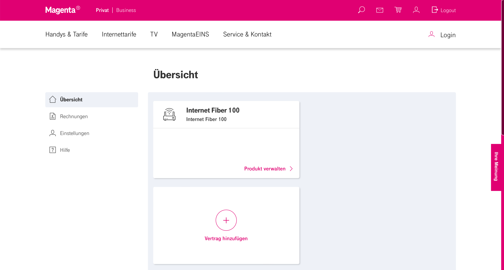

{kind=link}
{kind=link}
{kind=link}
{kind=link}
{kind=link}
{kind=link}
{kind=link}
{kind=link}
Guten Tag,
kurzer Zwischenbericht: Bisher ist es dem Social Media Team nicht gelungen, eine Lösung zu finden. Es heißt, man arbeite daran...

Wie kann man das "UPC-Wi-Free" WLAN-Netz dauerhaft auf seinem Kabelmodem deaktivieren lassen? Über "Mein Magenta" wird der entsprechende Menüpunkt nicht angezeigt. Die Hotline hat keinen Plan, von was ich spreche.
Hey @bissfest
Die Option zum Deaktivieren von Wi-Free ist in meinem Mein Magenta vorhanden (allerdings nur im alten).
Melde dich beim neuen Mein Magenta Kabel Portal an und klicke dann auf "Weitere Funktionen finden Sie hier" um zum alten Mein Magenta Kabel Portal zu wechseln (siehe Screenshot):
Nach dem Wechsel musst du dich beim alten Mein Magenta Kabel Portal erneut einloggen.
Beim alten Mein Magenta Kabel Portal findet sich der Menüpunkt Wi-Free (siehe Screenshot):
Und auf der Wi-Free Seite findet sich dann die Option Wi-Free zu deaktivieren (siehe Screenshot):
LG NTM
Vielen lieben Dank!
Der Teil "weitere Funktionen" ist bei mir leider nicht sichtbar (getestet mit Safari am Mac und und Chrome am PC). Gibt es ev. einen direkten Link zu dieser zweiten Seite? 
Versuche es mal über diesen Link: https://service.magenta.at/mein-magenta/portal/fixed
Danke für den direkten Link. Konnte mich erfolgreich einloggen bis zum Screenshot (siehe bitte Posting oben). Danach versuchte ich direkt auf deinen Link zu wechseln, was in einer neuen Anmeldemaske resultiert. Dort funktionieren die im ersten Schritt eingegebenen Logindaten nicht.
Benutzername/Kennwort vergessen klappt auch nicht. Insgesamt scheint mir dieses Portal nicht besonders "fixed" zu sein...
Der Anschluss ist ganz neu, wie du schreibst. Wann wurde dieser Bestellt?
Weil Neukunden seit zumindest 1. Februar sollten intern wohl auf einem anderen System sein.
Kann also sein, dass deswegen das alte Mein Magenta Kabel nicht mehr verfügbar ist, für deinen Anschluss.
Vielleicht weiß @Karo dazu mehr?
Nachdem auch das Dashboard des neuen Mein Magenta Kabel bei dir etwas anders aussieht (neben dem fehlenden Punkt zum Wechseln zum alten Mein Magenta), welche Optionen hast du unter Produkt verwalten des Internet Fiber 100 und bei den Einstellungen auf der linken Seite?
vor 7 Minuten schrieb NTM:Der Anschluss ist ganz neu, wie du schreibst. Wann wurde dieser Bestellt?
Danke.
Richtig, am 4.2. bestellt und am 10.2. hergestellt.
Man kann de facto in meinem Portal nur Rechnungen einsehen und sonst absolut nichts machen bzw. einstellen.
Hallo @bissfest , Wi-Free ist bei Neuanmeldungen nicht mehr verfügbar. Das bedeutete du kannst es nicht deaktivieren, weil es gar nicht mehr vorhanden ist. LG Karo
vor 6 Minuten schrieb Karo:weil es gar nicht mehr vorhanden ist
Das WLAN-Netz ist sehr wohl vorhanden und wird vom neuen Kabelmodem ausgestrahlt:
Hi @bissfest , anhand des Screenshots können wir nicht viel sagen. Bitte schick uns eine komplette Übersicht. Für uns sieht es so aus, als ob in deiner Gegend jemand Wi-Free nutzt und dir das Netzwerk angezeigt wird. Das Schloss zeigt, dass du nicht verbunden bist. LG Karo
Guten Tag,
Sie können meiner Auskunft gerne Glauben schenken und auf Basis dieser Infos mein Anliegen lösen.
Wie gesagt, sendet das neue Kabelmodem das "UPC-Wi-Free" WLAN-Netz dauerhaft aus. Zusätzlich zu meinen eigenen WLAN-Netzen (2,4 und 5 GHz). Vor der Installation war kein WLAN-Netz mit Namen "UPC-Wi-Free" in meiner Umgebung aktiv. Die Tatsache, dass ich nicht mit dem "UPC-Wi-Free" WLAN-Netz verbunden bin, ist mir bekannt. Ich bitte Sie, das "UPC-Wi-Free" WLAN-Netz dauerhaft auf meinem Kabelmodem zu deaktivieren, da ich selbst diese Option leider nicht durchführen kann. Besten Dank.
Hallo @bissfest ,
schalte bitte einmal dein Modem aus (also stromlos machen) und prüfe dann, ob das UPC Wi-Free Netz noch in deiner Liste der verfügbaren WLAN Netze ist. Teile uns dann bitte dein Ergebnis hier mit.
Liebe Grüße, Jonathan
vor 2 Stunden schrieb Jonathan Dorian:Teile uns dann bitte dein Ergebnis hier mit.
Guten Tag,
danke. Modem soeben ausgeschaltet und neu gestartet. Im ausgeschalteten Zustand kann man das "UPC-Wi-Free" WLAN-Netz nicht finden. Ist die Box wieder einsatzbereit, scheint dieses Netz auch wieder in der Liste der verfügbaren WLAN-Netze auf.
Bearbeitet von bissfestGuten Tag,
habe genau das gleiche Problem Mein Magenta Modem steht im Keller vor der Firewall, und sendet ein Wi-Free Wlan aus. Meine Herstellung des Kabel Anschluss war am 10.Feb. Ich habe im Neuen und Alten Portal keinen Reiter für Wi-Free
MfG Thomas S
vor 19 Stunden schrieb bissfest:Guten Tag,
danke. Modem soeben ausgeschaltet und neu gestartet. Im ausgeschalteten Zustand kann man das "UPC-Wi-Free" WLAN-Netz nicht finden. Ist die Box wieder einsatzbereit, scheint dieses Netz auch wieder in der Liste der verfügbaren WLAN-Netze auf.
Alles klar. Das ist wirklich interessant und dem sollte nachgegangen werden. Da wir hier keine Einsicht in Kundendaten haben, empfehle ich dir das direkt über unser Technikteam (0676 200 7777) näher prüfen zu lassen. Alternativ melde dich via DM (Facebook, Instagram, Twitter) bei meinen Kolleg*innen.
@Thomas S für dich gilt natürlich auch dasselbe :-).
Liebe Grüße, Jonathan
Haben Sie schon einmal bei dieser Hotline angerufen? Das kann ja nur als schlechter Scherz gemeint sein.
vor 2 Stunden schrieb bissfest:Haben Sie schon einmal bei dieser Hotline angerufen? Das kann ja nur als schlechter Scherz gemeint sein.
Auch die Kolleg*innen dort können Anliegen zur Prüfung intern weiterleiten.
LG, Jonathan
Hallo ihr Lieben,
ich habe seit geraumer Zeit das gleiche Problem. Ich bin Bestandskunde und der Anschluss ist jetzt 2 Jahre alt. Im Dezember 21 habe ich meinen Tarif gewechselt. Weil es zwischenzeitlich bei uns im Haus Probleme mit der Leitung gab, hab ich WiFree aktiviert nur um zu bemerken, dass ich es nicht mehr deaktivieren kann. Ich weiß, dass es früher die Option gab, die aber in meinem alten Magenta Dashboard nicht mehr vorhanden ist.
Ich würde das WiFree gerne deaktivieren, da grundsätzlich schon genug Netzwerke in der näheren Umgebung sind und ich eigentlich nicht noch ein zusätzliches haben will, dass ich eigentlich nicht benötige.
Und was mich noch interessieren würde ist, warum WiFree bei Neuanmeldungen nicht mehr vorhanden sein soll? Wird es abgeschaltet, oder hat man einfach keine andere Wahl mehr und man kann WiFree nicht mehr deaktivieren? Letzteres würde ich aus meiner Erfahrung schließen, denn ich konnte aktivieren und nicht mehr, wie früher, deaktivieren.
Danke schon mal im Voraus für eure Antworten.
LG
Kauqulin
vor 21 Stunden schrieb Jonathan Dorian:Auch die Kolleg*innen dort können Anliegen zur Prüfung intern weiterleiten.
LG, Jonathan
Dazu müssten die Kollegen mein Anliegen verstehen. Leider scheitert es schon daran.
Niemand wird dieses Rätsel je lösen.
vor 2 Stunden schrieb bissfest:Dazu müssten die Kollegen mein Anliegen verstehen. Leider scheitert es schon daran.
Niemand wird dieses Rätsel je lösen.
Wie geschrieben, kannst du (oder auch andere mit diesem Problem) dich auch an unsere Kolleg*innen vom Social Media Team wenden.
LG, Jonathan
Guten Tag,
kurzer Zwischenbericht: Bisher ist es dem Social Media Team nicht gelungen, eine Lösung zu finden. Es heißt, man arbeite daran...

Darf ich fragen, warum du das "UPC-Wi-Free" WLAN-Netz deaktivieren möchtest? Es schränkt ja nicht die verfügbare Bandbreite ein.
LG
Rexalius
Das Magenta Modem ist im Keller und direkt dahinter Meine Firewall und ich möchte nicht immer ein sendendes Modem auf 1 der 3 verfügbaren Frequenzen haben. (ein Gäste Wlan Gibt es auf den 4 Accespoints im Gesamten Haus).
Beim Magenta Kundensupport (TelefonHotline) konnte man mir beim 2en Anruf weiter helfen es wurde eine neue Konfiguration auf mein Modem gepuscht und ich musste nur noch das Modem Neustarten.
LG Thomas
vor 31 Minuten schrieb Thomas S:Beim Magenta Kundensupport (TelefonHotline) konnte man mir beim 2en Anruf weiter helfen es wurde eine neue Konfiguration auf mein Modem gepuscht und ich musste nur noch das Modem Neustarten.
LG Thomas
So viel Glück hatte ich leider bisher nicht. Welche Hotline hast du angerufen?
Zusätzlich zu den bisher in diesem Thread erwähnten Gründen kommt noch, dass ich das Modem so wenig wie möglich auslasten möchte. Es soll die maximale CPU und RAM Performance für meinen Datenverkehr bereit halten.
Bearbeitet von bissfestStatus: unverändert
Bei Magenta darfst echt kein Problem haben, das über eine 08/15-Frage hinaus geht.
das stimmt net, ich habe immer erstklassigen support erhalten, speziell, wenn ich an die Techniker weitergeleitet wurde.
Wie kann man das "UPC-Wi-Free" WLAN-Netz dauerhaft auf seinem Kabelmodem deaktivieren lassen? Über "Mein Magenta" wird der entsprechende Menüpunkt nicht angezeigt. Die Hotline hat keinen Plan, von was ich spreche.
Auch 6 Wochen später: Status unverändert